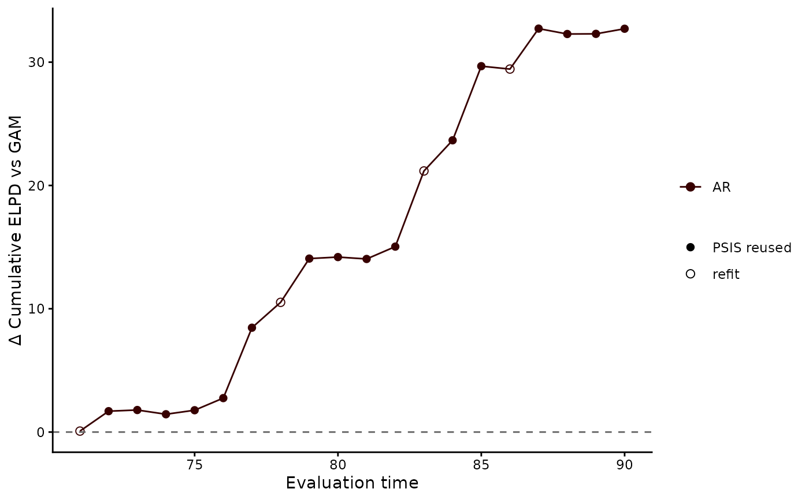

Tidy comparison of leave-future-out ELPDs across mvgam_lfo runs
Source:R/compare_scores.R
compare_elpds.RdStacks the per-step ELPDs from several mvgam_lfo
objects into one long-format tibble, with one row per model
and evaluation time.
Arguments
- ...
Two or more
mvgam_lfoobjects fromlfo_cv(). Argument names are taken from the call.- model_names
Optional character vector of model labels; overrides the names inferred from the call.
Value
A tibble with columns:
model– factor with one level per supplied LFO run.eval_time– the rolling-origin evaluation timepoint.elpd– per-step expected log predictive density.pareto_k– the Pareto-k diagnostic at that step.refit_here– logical, TRUE when the step triggered a fresh refit (Pareto-k above threshold or initial fit).
See also
lfo_cv(), loo_compare.mvgam_lfo(),
loo_model_weights.mvgam_lfo(),
plot.mvgam_compare_elpds(), compare_scores()
Other model comparison:
bridge_sampler.mvgam(),
kfold.mvgam(),
lfo_cv.mvgam(),
log_lik.mvgam(),
loo.mvgam(),
loo_compare.mvgam_lfo(),
mvgam_loo_extras,
posterior_average.mvgam(),
waic.mvgam()
Examples
# \dontrun{
set.seed(1)
simdat <- sim_mvgam(family = poisson(), n_series = 1L,
n_timepoints = 120L, trend_model = AR())
# Two models of one count series: a smooth of x with and without
# an AR(1) trend
mod_gam <- mvgam(y ~ s(x), data = simdat$data_train,
family = poisson(), chains = 2, silent = 2)
#> Warning: 25 of 2000 (1.0%) transitions ended with a divergence.
#> See https://mc-stan.org/misc/warnings for details.
mod_ar <- mvgam(y ~ s(x), trend_formula = ~ AR(p = 1),
data = simdat$data_train, family = poisson(),
chains = 2, silent = 2)
#> Warning: 5 of 2000 (0.0%) transitions ended with a divergence.
#> See https://mc-stan.org/misc/warnings for details.
# }
# \dontrun{
# Each origin after t = 70 forecasts the next time step. The
# pointwise log densities feed stacking weights
lfo_gam <- lfo_cv(mod_gam, min_t = 70L, save_log_lik = TRUE)
#> Warning: 4 of 2000 (0.0%) transitions ended with a divergence.
#> See https://mc-stan.org/misc/warnings for details.
#> Warning: 6 of 2000 (0.0%) transitions ended with a divergence.
#> See https://mc-stan.org/misc/warnings for details.
#> Warning: 9 of 2000 (0.0%) transitions ended with a divergence.
#> See https://mc-stan.org/misc/warnings for details.
lfo_ar <- lfo_cv(mod_ar, min_t = 70L, save_log_lik = TRUE)
#> Warning: 9 of 2000 (0.0%) transitions ended with a divergence.
#> See https://mc-stan.org/misc/warnings for details.
#> Warning: 11 of 2000 (1.0%) transitions ended with a divergence.
#> See https://mc-stan.org/misc/warnings for details.
#> Warning: 13 of 2000 (1.0%) transitions ended with a divergence.
#> See https://mc-stan.org/misc/warnings for details.
#> Warning: 37 of 2000 (2.0%) transitions ended with a divergence.
#> See https://mc-stan.org/misc/warnings for details.
# One row per model and origin
elpds <- compare_elpds(lfo_gam, lfo_ar, model_names = c("GAM", "AR"))
head(elpds)
#> # A tibble: 6 × 5
#> model eval_time elpd pareto_k refit_here
#> <fct> <int> <dbl> <dbl> <lgl>
#> 1 GAM 71 -1.87 NA TRUE
#> 2 GAM 72 -4.27 -0.0847 FALSE
#> 3 GAM 73 -3.79 0.131 FALSE
#> 4 GAM 74 -1.53 0.0927 FALSE
#> 5 GAM 75 -2.44 0.0513 FALSE
#> 6 GAM 76 -3.58 0.135 FALSE
# The running sum of the AR model's ELPD minus the GAM's. Hollow
# points mark the origins where the model was refitted
plot(elpds, relative = "GAM", cumulative = TRUE)

# Next, loo_compare() sums the ELPDs with a standard error
# }